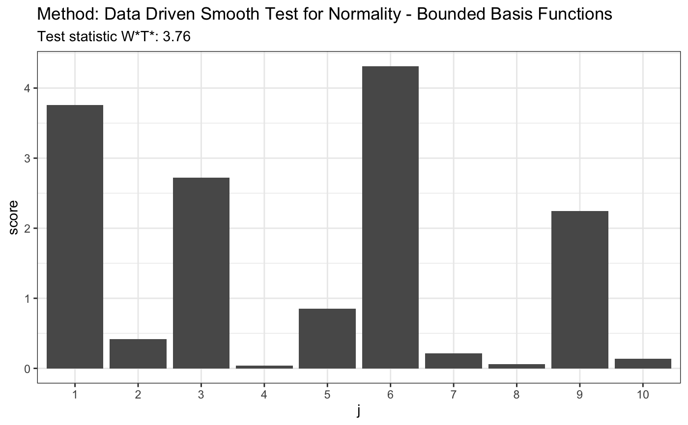

R/ddst.normbounded.test.R
ddst.normbounded.test.RdPerforms data driven smooth test for composite hypothesis of normality Null density is given by \( f(z;\gamma)=1/(\sqrt{2 \pi}\gamma_2) \exp(-(z-\gamma_1)^2/(2 \gamma_2^2))\) for \(z \in R\). We model alternatives similarly as in Kallenberg and Ledwina (1997 a,b) using Legendre's polynomials or cosine basis.
ddst.normbounded.test( x, base = ddst.base.legendre, d.n = 10, c = 100, compute.p = TRUE, alpha = 0.05, compute.cv = TRUE, ... )
| x | a (non-empty) numeric vector of data values |
|---|---|
| base | a function which returns an orthonormal system, possible choice: |
| d.n | an integer specifying the maximum dimension considered, only for advanced users |
| c | a calibrating parameter in the penalty in the model selection rule |
| compute.p | a logical value indicating whether to compute a p-value or not |
| alpha | a significance level |
| compute.cv | a logical value indicating whether to compute a critical value corresponding to the significance level alpha or not |
| ... | further arguments |
An object of class htest
the value of the test statistic.
the number of choosen coordinates (k).
a character string indicating the parameters of performed test.
a character string giving the name(s) of the data.
the p-value for the test, computed only if compute.p = TRUE.
Chen, L., Shapiro, S.S. (1995). An alternative test for normality based on normalized spacings. J. Statist. Comput. Simulation 53, 269--288.
Inglot, T., Ledwina, T. (2006). Towards data driven selection of a penalty function for data driven Neyman tests. Linear Algebra and its Appl. 417, 579--590.
Janic, A. and Ledwina, T. (2008). Data-driven tests for a location-scale family revisited. J. Statist. Theory. Pract. Special issue on Modern Goodness of Fit Methods..
Kallenberg, W.C.M., Ledwina, T. (1997 a). Data driven smooth tests for composite hypotheses: Comparison of powers. J. Statist. Comput. Simul. 59, 101--121.
Kallenberg, W.C.M., Ledwina, T. (1997 b). Data driven smooth tests when the hypothesis is composite. J. Amer. Statist. Assoc. 92, 1094--1104.
set.seed(7) # H0 is true z <- rnorm(100) # let's look on first 10 coordinates d.n <- 10 t <- ddst.normbounded.test(z, compute.p = TRUE, d.n = d.n) t#> #> Data Driven Smooth Test for Normality - Bounded Basis Functions #> #> data: z, base: ddst.base.legendre, c: 100, d.n: 10 #> W*T* = 2.2232, T* = 1, p-value = 0.1581 #>plot(t)#> #> Data Driven Smooth Test for Normality - Bounded Basis Functions #> #> data: z, base: ddst.base.legendre, c: 100, d.n: 10 #> W*T* = 299.45, T* = 10, p-value < 2.2e-16 #>plot(t)# for Tephra data z <- c(-1.748789, -1.75753, -1.740102, -1.740102, -1.731467, -1.765523, -1.761521, -1.72522, -1.80371, -1.745624, -1.872957, -1.729121, -1.81529, -1.888637, -1.887761, -1.881645, -1.91518, -1.849769, -1.755141, -1.665687, -1.764721, -1.736171, -1.736956, -1.737742, -1.687537, -1.804534, -1.790593, -1.808661, -1.784081, -1.729903, -1.711263, -1.748789, -1.772755, -1.72756, -1.71358, -1.821116, -1.839588, -1.839588, -1.830321, -1.807835, -1.747206, -1.788147, -1.759923, -1.786519, -1.726779, -1.738528, -1.754345, -1.781646, -1.641949, -1.755936, -1.775175, -1.736956, -1.705103, -1.743255, -1.82613, -1.826967, -1.780025, -1.684504, -1.751168) t <- ddst.normbounded.test(z, compute.p = TRUE, d.n = d.n) t#> #> Data Driven Smooth Test for Normality - Bounded Basis Functions #> #> data: z, base: ddst.base.legendre, c: 100, d.n: 10 #> W*T* = 3.7615, T* = 1, p-value = 0.08891 #>plot(t)